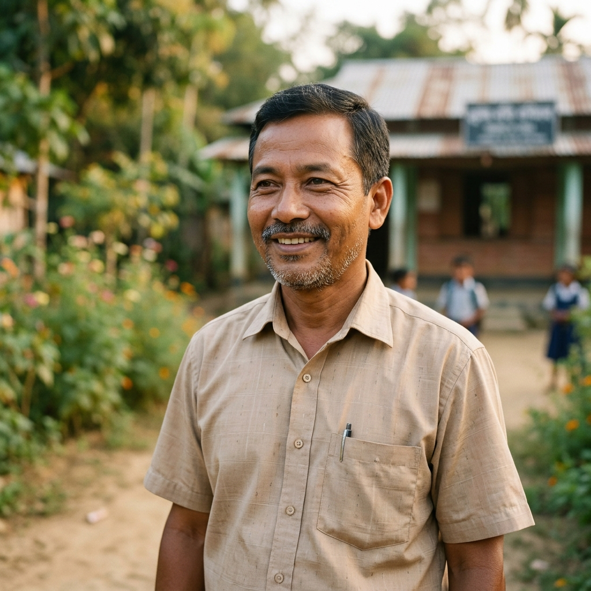

Serving Underprivileged & Marginalized Communities
Global Compassion Foundation is a non-profit, non-religious, and humanitarian organization established in 2025 at Tuichawng Village, Lunglei District, Mizoram, India. The Foundation was formed with the sole purpose of serving underprivileged and marginalized communities through education, healthcare, social welfare, and compassionate community development.
We believe that compassion, when put into action, has the power to transform lives. Our work is guided by universal human values such as kindness, dignity, equality, ethical conduct, and social responsibility, without discrimination on the basis of religion, caste, community, language, gender, or background.

Vision & Mission
Our guiding principles and direct actions for community transformation.
Our Vision
Our Mission
- To provide quality education to underprivileged children in rural and backward areas
- To improve access to basic healthcare in remote and underserved regions
- To support vulnerable groups including children, elderly persons, women, and persons with disabilities
- To promote ethical living, peace, social harmony, and community well-being through non-religious, value-based initiatives
- To work transparently, honestly, and in collaboration with communities and institutions for sustainable development
The Chakma People of Mizoram: Challenges
Understanding the community's history, heritage, and the systematic gaps we work to bridge.
Who Are the Chakmas?
The Chakma are an ethnic tribal community of Buddhist heritage with a distinct culture, language, and history. They are one of the indigenous tribal groups in the Indian subcontinent, traditionally inhabiting the Chittagong Hill Tracts of Bangladesh and parts of Northeast India, including Mizoram, Tripura, Arunachal Pradesh, and Assam.
In Mizoram, Chakmas form a recognized Scheduled Tribe and make up around 8–9% of the state’s population. They are most heavily concentrated in the south of the state, along the border with Bangladesh.
Primary Challenges Faced by Chakma Communities
Despite constitutional protections, the Chakma community in Mizoram continues to experience wide gaps in educational access and outcomes:
- Literacy rates among Chakmas are significantly lower than the state average; historically at around 45% compared to Mizoram’s literacy rate of almost 90%.
- Many Chakma villages lack quality schools beyond primary levels, forcing children to travel long distances or drop out.
- Reports indicate discrimination in higher education access, including alleged barriers to professional seats such as medical education for Chakma students.
These educational barriers contribute to a persistent cycle of poverty and underdevelopment, restricting opportunities for advancement and skilled employment.
Most Chakma families in Mizoram rely on traditional subsistence agriculture such as shifting cultivation (jhum), which yields low productivity and limited economic stability.
The absence of infrastructure such as reliable irrigation, roads, electricity, and market access further limits economic opportunities and contributes to high levels of poverty.
Many Chakma-dominated areas in Mizoram suffer from chronic underdevelopment:
- Poor connectivity to main roads and transportation
- Limited or no reliable electricity
- Inadequate water supply and sanitation
- Scarce primary health facilities and emergency services
Such conditions reduce quality of life and compound barriers to health, education, and livelihood development.
Although the community is recognized under the Sixth Schedule of the Constitution and has its own Chakma Autonomous District Council (CADC), challenges persist:
- Institutional discrimination and societal bias have been reported, including in language-based job criteria and resource allocation.
- Some community members have been treated as outsiders or non-indigenous by dominant groups, affecting access to citizenship rights, services, and social inclusion.
Such discrimination intensifies feelings of marginalisation and restricts equitable participation in state-level opportunities.
With limited local healthcare infrastructure, many Chakma communities must travel long distances for medical care. Maternal and child health services are often inadequate, and emergency response is slow due to remoteness and poor connectivity.
Why GCF & Mr. Sudip Chakma's Work Matters
How personal inspiration translates to community empowerment and direct, on-the-ground actions.
The Catalyst
Living within this context of educational exclusion, economic hardship, infrastructural deficits, and social marginalization, Mr. Sudip Chakma was deeply moved to take action:
- Having experienced interrupted education himself, he understood firsthand how lack of opportunity can shape a person’s future.
- His early teaching work and countless late nights spent connecting with supporters reflected a relentless belief that education and compassion are catalysts for change.
- Observing that many Chakma children lacked access to quality schools and supportive learning environments, he devoted his life to creating alternative pathways for learning, dignity, and social upliftment.
The GCF Response
Global Compassion Foundation’s core mission — especially the establishment of a non-profit school for underprivileged Chakma children — is rooted in addressing these lived realities:
- Quality Education for children historically denied equitable educational opportunities.
- Safe, Inclusive Environments that nurture potential, confidence, and local cultural dignity.
- Community-Centered Solutions that empower children and families for future success.
Summary
The Chakma community of Mizoram faces layered challenges — educational, economic, social, and infrastructural — rooted in historical marginalization and ongoing disparities. Through Global Compassion Foundation, Mr. Sudip Chakma is addressing these barriers with compassion, vision, and on-the-ground action, helping children and families unlock pathways to a better future.
What We Do
Through focus, dedication, and resourcefulness, we run key programs that make a difference in remote tracts.
Education for the Underprivileged
Education is at the heart of our work. Global Compassion Foundation aims to establish and support charitable schools, hostels, and learning centers for children who lack access to quality education due to poverty and geographical challenges. Our focus is on ensuring that education truly reaches the child, especially in rural and marginalized communities.
Healthcare in Rural Areas
Many rural and remote areas suffer from inadequate healthcare facilities, long distances to hospitals, shortage of medical professionals, and lack of health awareness. The Foundation works towards establishing rural hospitals, primary health centers, clinics, and mobile medical services to provide affordable and accessible healthcare for all.
Care for the Vulnerable
We aim to establish and support old age homes, shelter homes, and care centers for the elderly, destitute, abandoned, and other vulnerable individuals, ensuring they live with dignity and care.
Meditation and Well-Being Centers
The Foundation promotes mental peace and emotional well-being through meditation and mindfulness centers. Meditation, as practiced by the Foundation, is completely non-religious and open to all. It is offered solely as a method to improve concentration, inner peace, emotional balance, and a healthy way of life.
Humanitarian & Community Welfare Activities
We undertake relief and rehabilitation work during natural disasters and emergencies, support livelihood development, promote environmental awareness, sanitation, nutrition, and community empowerment programs.
Our Core Values
The values that drive every decision, program, and volunteer action in our foundation.
Compassion in Action
Transparency & Accountability
Inclusiveness & Equality
Ethical Conduct & Responsibility
Service Without Discrimination

Meet Our Founder
Global Compassion Foundation was founded by Mr. Sudip Chakma, a Government Primary School Teacher from Tuichawng Village and the founder of Mahabodhi Residential School, Tuichawng.
With years of experience in grassroots education and community service, he is a dedicated and selfless social worker who deeply understands the challenges faced by children and families in rural and marginalized areas.
His lifelong commitment to education, social upliftment, and compassionate service inspired the formation of this Foundation to serve society in a structured, transparent, and sustainable manner.
Memorandum of Association
Registered under the Mizoram Societies Registration Act, 2005 — the foundational legal charter of Global Compassion Foundation.